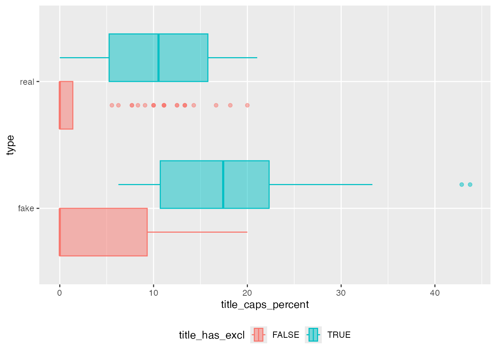
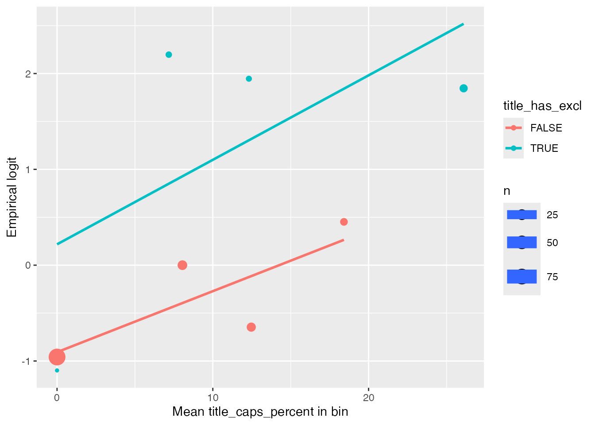

library(dplyr)
library(broom)
library(ggformula)21: Model Comparison for Logistic Regression
Stat 230 - Spring 2026
In this activity we’ll compare models for the fake news data using likelihood ratio tests (LRTs) and information criteria. To load the data, run the following code chunk:
news <- read.csv("https://aluby.github.io/stat230/data/fake_news_bayesrules.csv")We’ll start from the same model we used last time:
news_mod <- glm(type_num ~ title_words + title_has_excl + title_caps_percent,
data = news, family = "binomial")
tidy(news_mod)# A tibble: 4 × 5
term estimate std.error statistic p.value
<chr> <dbl> <dbl> <dbl> <dbl>
1 (Intercept) -2.23 0.672 -3.32 0.000894
2 title_words 0.120 0.0581 2.07 0.0383
3 title_has_exclTRUE 2.00 0.849 2.35 0.0186
4 title_caps_percent 0.0498 0.0295 1.69 0.0908 Our question today: do we need an interaction between title_has_excl and title_caps_percent? In other words, is the association between the percent of capital letters and the odds of being fake news different for titles with and without an exclamation point?
Part 1: Exploratory data analysis
First, a boxplot of title_caps_percent for real and fake articles, separately for titles with and without an exclamation point:
gf_boxplot(type ~ title_caps_percent, color = ~title_has_excl, fill = ~title_has_excl,
data = news, alpha = .5) +
theme(legend.position = "bottom")
To check whether the slopes might differ, we also make an empirical logit plot with a line for each group. We bin title_caps_percent and calculate the empirical logit within each bin and each group.
news_agg <- news |>
mutate(tcp_bin = cut(title_caps_percent, c(-Inf, 0, 5, 10, 15, Inf))) |>
group_by(tcp_bin, title_has_excl) |>
summarize(mean_x = mean(title_caps_percent),
n = n(),
n_fake = sum(type_num),
emp_logit = log((n_fake + 0.5) / (n - n_fake + 0.5)),
.groups = "drop")
news_agg# A tibble: 8 × 6
tcp_bin title_has_excl mean_x n n_fake emp_logit
<fct> <lgl> <dbl> <int> <int> <dbl>
1 (-Inf,0] FALSE 0 91 25 -0.959
2 (-Inf,0] TRUE 0 1 0 -1.10
3 (5,10] FALSE 8.05 18 9 0
4 (5,10] TRUE 7.17 4 4 2.20
5 (10,15] FALSE 12.5 15 5 -0.647
6 (10,15] TRUE 12.3 3 3 1.95
7 (15, Inf] FALSE 18.4 8 5 0.452
8 (15, Inf] TRUE 26.1 10 9 1.85
NoteWhy
cut() and not ntile()?
About 61% of the titles have exactly 0% capital letters, so equal-size bins would put most bins at the same x value. We create the bins by hand instead. (No titles fall in the (0, 5] bin, so it doesn’t appear in the summary.)
gf_point(emp_logit ~ mean_x, color = ~title_has_excl, size = ~n, data = news_agg,
xlab = "Mean title_caps_percent in bin", ylab = "Empirical logit") |>
gf_smooth(method = "lm")
Q1. How many articles are in each of the cells of news_agg? Which group has very few observations?
Q2. Based on these plots, do you think we need an interaction (different slopes for the two groups)? How confident are you, given how little data there is for titles with exclamation points?
Part 2: The interaction model
Fill in the blanks to fit the model with an interaction between title_has_excl and title_caps_percent (and keep title_words as a main effect).
news_mod2 <- glm(type_num ~ title_words + ___ * ___,
data = news, family = "binomial")
tidy(news_mod2)Q3. Write out the fitted model on the log-odds scale for titles with an exclamation point and for titles without one.
Q4. Interpret the coefficient for the interaction term title_has_exclTRUE:title_caps_percent on the odds scale. (Hint: \(e^{\widehat\beta}\) is a ratio of odds ratios.)
Part 3: LRT for the interaction
The likelihood ratio test compares a reduced model to a full model that contains all of the reduced model’s terms (plus some more). In R, we use anova() with test = "LRT", and give the reduced model first.
anova(___, ___, test = "LRT")Q5. Fill in the blanks to test whether we need the interaction term. Write out the null and alternative hypotheses, then report the test statistic (\(\Lambda\), the Deviance column), the degrees of freedom, the p-value, and your conclusion in context.
Q6. The coefficient table from tidy(news_mod2) also contains a z-test for the interaction term. Compare its p-value to the LRT p-value. Are they close?
We can also verify that the LRT statistic is the drop in deviance. The deviance of a model is \(-2\log L\), and a smaller deviance means a better fit:
deviance(news_mod) # reduced model
deviance(news_mod2) # full model
deviance(news_mod) - deviance(news_mod2)Part 4: Do we need title_has_excl at all?
The variable title_has_excl appears in two terms of the interaction model (the main effect and the interaction), so to ask whether we need it at all we must remove both. Fit this reduced model and use an LRT to compare it to news_mod2:
reduced_model <- glm(type_num ~ title_words + title_caps_percent,
data = news, family = "binomial")
anova(reduced_model, news_mod2, test = "LRT")Part 5: The overall test
The output of summary() gives us the deviance of the model we fit (the residual deviance) and the deviance of an intercept-only model (the null deviance).
summary(news_mod)Q9. Use the null deviance and residual deviance to calculate the LRT statistic for \(H_0: \beta_1 = \beta_2 = \beta_3 = 0\) (all slopes are 0) by hand. Then use pchisq() to find the p-value. The degrees of freedom is the difference in the two models’ degrees of freedom.
lambda <- ___
df <- ___
1 - pchisq(lambda, df)Check your work by fitting an intercept-only model and comparing:
null_model <- glm(type_num ~ 1, data = news, family = "binomial")
anova(null_model, news_mod, test = "LRT")Part 6: AIC and BIC
AIC(reduced_model, news_mod, news_mod2)
BIC(reduced_model, news_mod, news_mod2)Q10. Which of the three models do AIC and BIC prefer? Do they agree with the LRTs? Which model would you use to explain the fake news data?
Your turn
The dataset also has the sentiment of the article: negative and positive (the percent of words with negative and positive sentiment).
- Fit a model that adds both variables to
news_mod. - Use an LRT to test whether the two sentiment variables help (\(d = 2\)).
- Compare the LRT result to the individual z-tests for
negativeandpositive. - Compare AIC and BIC for the two models. Do the criteria agree? Which model would you choose, and why?
# your code hereFunction quick reference
| Function | Purpose |
|---|---|
glm(y ~ x, data, family = "binomial") |
Fit a binary logistic regression model |
cut(x, breaks) |
Create bins from specific cut points |
anova(reduced, full, test = "LRT") |
Likelihood ratio test comparing two nested models |
deviance(model) |
Deviance (\(-2 \log L\)) of a fitted model |
pchisq(x, df) |
Probability from a \(\chi^2\) distribution (use 1 - pchisq() for a p-value) |
AIC(), BIC() |
Information criteria for one or more fitted models (smaller is better) |